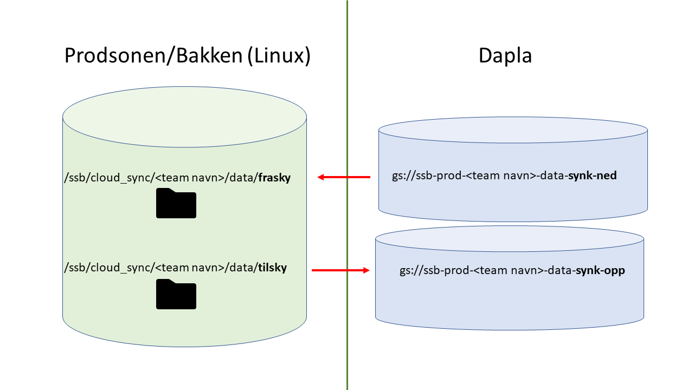

11 Overføre data
For å overføre data mellom bakke og sky brukes Data Transfer, som er en tjeneste i Google Cloud Console. Denne tjenesten kan brukes til å flytte data både til og fra Linuxstammen og Dapla, og er tilgjengelig for teamets kildedataansvarlige.
For å få tilgang til å overføre filer må man be om dette ved opprettelsen av teamet. Ber man om det skjer følgende:
- En mappe blir opprettet på Linux i prodsonen under
/ssb/cloud_sync/ - Et Google Project blir opprettet med navn
<team navn>-ts.
Dette Google-prosjektet er ikke det samme som der du lagrer annen data. Det har navnet <team navn>-ts, og filstiene på bakken og sky vises i Figur 11.1.

Teamets kildedataansvarlige vil være spesifisert som en del av å opprette et Dapla-team.
11.1 Sette opp overføringsjobber
Enten man skal overføre filer opp til sky eller ned til bakken så bruker man den samme Data Transfer tjenesten. For å få tilgang til denne må man først logge seg inn i Google Cloud Console. Sjekk at du er logget inn med din SSB-konto (xxx@ssb.no).
Øverst på siden, til høyre for teksten Google Cloud finnes det en prosjektvelger, og her er det viktig å velge korrekt Google prosjekt. Hvis du trykker på prosjektvelgeren vil det åpnes opp et nytt vindu. Sjekk at det står SSB.NO øverst i dette vinduet. Trykk deretter på fanen ALL for å få opp alle tilgjengelige Google-prosjekter under organisasjonen ssb.no (Figur 11.2)

Under ssb.no vil det ligge flere mapper. Åpne mappen som heter production og let frem en undermappe som har navnet på ditt Dapla-team. Strukturen skal se slik ut:
ssb.no
├── production
└── <teamnavn>
├── prod-<teamnavn>
└── <teamnavn>-tsDet underste nivået (prod-<teamnavn> og <teamnavn>-ts) viser prosjektene, nivået i mellom er mapper, og toppnivået er organisasjonen (ssb.no). Prosjektet <teamnavn>-ts er et separat prosjekt som bare teamets kildedataansvarlige har tilgang til, og det er her tjenesten Data Transfer skal settes opp.
Velg derfor prosjektet
<teamnavn>-ts.I søkefeltet til Google Cloud Console, skriv
Data transferog trykk på det valget som kommer opp.Første gang man kommer inn på siden til Transfer Services vil man bli vist en blå knapp med teksten
Set Up Connection. Når du trykker på denne vil det dukke opp et nytt felt hvor du får valgetCreate Pub-Sub Resources. Dette er noe som bare trengs å gjøre én gang. Trykk på den blåCREATEknappen, og deretter trykk påCloselenger nede.I navigasjonsmenyen til venstre trykk
Transfer jobs, og deretter trykk på+ Create transfer jobøverst på siden for å opprette en ny overføringsjobb.
11.1.1 Overføring fra Linuxstammen til Dapla
Følgende oppskrift tar utgangspunkt i siden Create a transfer job (Figur 11.3):
- Velg
POSIX filesystemunder “Source type” ogGoogle cloud storageunder “Destination type” (eller motsatt hvis overføringsjobben skal gå fra Dapla til Linuxstammen). TrykkNext step - Nedtrekkslisten “Agent pool” skal normalt bare ha ett valg:
transfer_service_default. Velg denne. - I feltet “Source directory path” skal man kun skrive
data/tilskysiden overføringsagenten kun har tilgang til mapper som ligger relativt plassert under/ssb/cloud_sync/<teamnavn>/. TrykkNext step - Velg en destinasjon for overføringsjobben. Trykk på
Browseog velg bøtten med navn som passer tilssb-prod-<teamnavn>-data-synk-opp. Vi anbefaler at du også oppretter en mappe inne i denne bøtten. Det gjøres ved å trykke på mappeikonet med et+-tegn foran. Skriv inn et passende mappenavn og trykkSelecti bunnen av siden. Trykk deretterNext step - Neste steg “Choose how and when to run this job” er opp til brukeren å bestemme. Hvis man f.eks. velger at Data Transfer skal overføre data en gang i uken, vil den kun starte en overføring hvis det finnes nye data. Trykk
Next step - Beskriv overføringsjobben, f.eks: “Flytter data for
til sky.”. Resten av feltene er opp til brukeren å bestemme. Standardverdiene er OK.
Trykk til slutt på den blå Create-knappen. Du vil kunne se kjørende jobber under menyen Transfer jobs.
For å sjekke om data har blitt overført, skriv inn cloud storage i søkefeltet øverst på siden og trykk på det første valget som kommer opp. Her vil du finne en oversikt over alle teamets bøtter, deriblant en med navn ssb-prod-<team-name>-data-synk-opp. Når overføringsjobben er ferdig vil du kunne finne igjen dataene i den mappen som ble definert i stegene overnfor.
11.1.2 Overføring fra Dapla til Linuxstammen
Overføringsjobben settes opp nesten identisk med Overføring fra Linuxstammen til Dapla med unntak av følgende:
- Steg 1: Velg
Google cloud storageunder “Source type” ogPOSIX filesystemunder “Destination type” - Steg 2: Velg bøtten
ssb-prod-<team-name>-data-synk-ned - Step 3: Velg
transfer_service_defaultsom “Agent pool” og skrivdata/fraskyinn i feltet for “Destination directory path”.
For å se om data har blitt overført til Linuxstammen må du nå gå til mappen /ssb/cloud_sync/<team-name>/data/frasky fra FileZilla.
Husk: Du kan alltids gå tilbake og se på tidligere fullførte jobber, og starte en overføringsjobb manuelt fra menyen Transfer jobs.
11.2 Skrive ut data
Når du har satt opp en, enten for å overføre fra sky eller til sky, kan du skrive ut data til mappen eller bøtten som du har bedt Transfer Service om å overføre data fra.
Hvis du skal overføre data fra bakken/prodsonen til sky, så må teamets kildedataansvarlige skrive ut data til Linux-mappen /ssb/cloud_sync/<team navn>/data/tilsky, og det vil ende opp i Dapla-bøtta gs://ssb-prod-<team navn>-data-synk-opp Dette kan du gjøre med alle programmeringsverktøy som har en kobling til Linux-stammene der dataene ligger. For eksempel:
- SAS EG
- SAS-installasjon på Linux
- Jupyterlab i prodsonen
- Rstudio på sl-stata-03
Skal du flytte data fra Dapla til bakken/prodsonen, så må teamets kildedataansvarlige skrive ut data til gs://ssb-prod-<team navn>-data-synk-opp-bøtta på Dapla. Det er noe man typisk gjør fra Jupyterlab på Dapla.